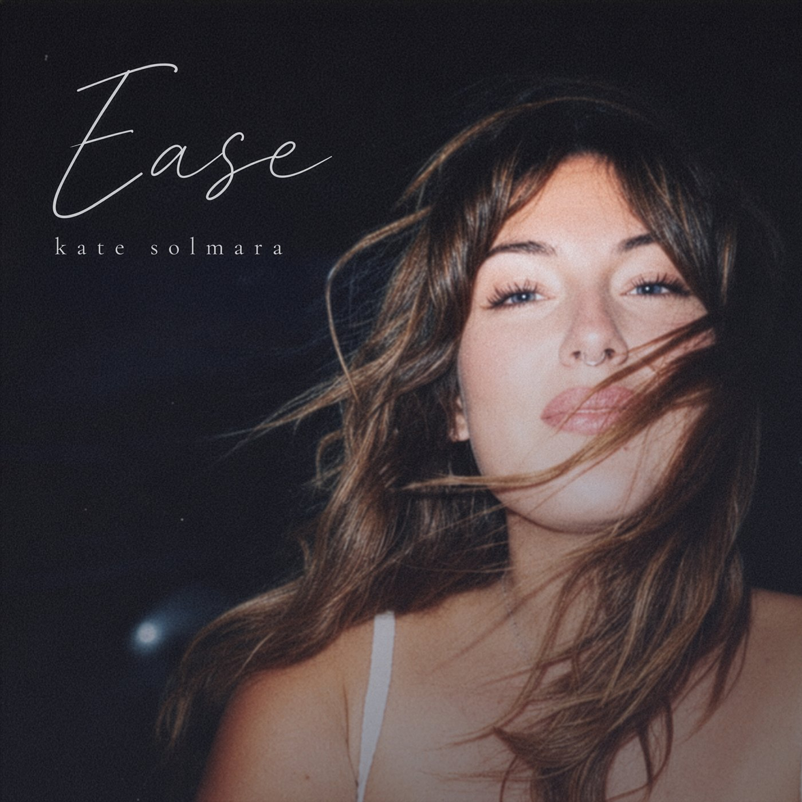

kate solmara
Listen to EaseAlso on Apple Music · YouTube Music · all platforms →
Featured in It’s All Indie · Lost in the Manor · CLOUT · BOPS
A song for when you’re carrying too much.
“Ease” is about letting go of the pressure to earn your worth and carry everything on your own. Since July, it has found listeners in more than 100 countries.
“Damn, Kate. It soars.”
bops
“A breathtaking folk-pop debut with the soaring polish of an established superstar.”
“Warm, understated and emotionally generous.”
“The song version of a ‘digital detox.’”
also in clout, right chord music, the other side reviews, caesar live n loud, rádio armazém, parapop, newreleasetoday and on the women of substance music podcast

I spent years writing songs and keeping them to myself. At 39, with two kids and a very full life, I finally let one go out into the world.
“Ease” is about putting down the weight you were never meant to carry alone. Watching it reach people in more than 100 countries has been one of the most surprising gifts of my life.
I make this music on my own, so if a song of mine meets you somewhere, thank you for listening, and for telling someone.
Kate
Kate Solmara (soul-MAR-uh: sun and sea) is an Arizona-based singer-songwriter making warm, emotionally honest indie folk-pop.
The next song is in the works. Hear it first.
Join the Solmara Circle for new music before anyone else, studio peeks and the stories behind the songs. A few notes a year, never spam.
Let’s talk.
Radio, press, playlists, sync or a collaboration? Send a note and choose what it’s about. Stations and press can request the press kit here, and I’ll send it over personally.
Or email info@katesolmara.com